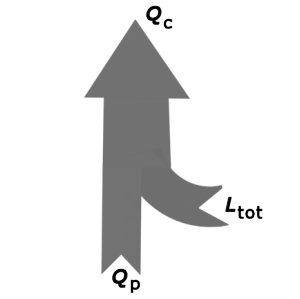

Principiul al II−lea al termodinamicii (formularea
Plank): Este imposibilă obţinerea lucrului mecanic printr−un proces ciclic monoterm.
Principiul al II−lea al termodinamicii (formularea
Plank): Este imposibilă obţinerea lucrului mecanic printr−un proces ciclic monoterm.
Elemente de termodinamică. |
Al doilea principiu al termodinamicii |
H-3. |
Al doilea principiu al termodinamicii |
Ciclul Carnot este cel mai performant ciclu termodinamic posibil: acesta are celmai mare randament care poate fi obţinut pentru temperaturile extreme între care se desfăşoară.
Analiza acestui ciclu a condus la imposibilitatea transformării integrale a căldurii în lucru mecanic. Afirmarea acestei imposibilităţi constituie una dintre formulările principiului al II−lea al termodinamicii (formulare datorată germanului Max Plank).
Principiul al II−lea al termodinamicii (formularea
Plank): Este imposibilă obţinerea lucrului mecanic printr−un proces ciclic monoterm.
Pentru a obţine lucru mecanic este esenţial schimbul de căldură la două temperaturi diferite: o sursă caldă (care furnizează căldură motorului) şi una rece (care preia căldură de la acesta).
Fără această diferenţă de temperatură între sursa caldă şi cea rece, nu se produce nici un transfer de energie şi nu poate fi obţinut lucru mecanic.
Oricare ar fi perfecţionările pe care le−am face unui motor termic, o parte din căldura primită de la sursa caldă trebuie transferată sursei reci.
Astfel, doar o parte din căldura primită de la sursa caldă poate fi transformată în lucru mecanic util (figura 3−1).
 |
Figura 3-1. O parte din căldura primită de un motor termic de la sursa caldă trebuie transferată sursei reci, nefiind transformată în lucru mecanic util. |
Ciclul Carnot este reversibil − poate fi parcurs în sens invers prin aceleaşi stări intermediare de echilibru. Aceasta înseamnă că motorul Carnot se transformă într−o pompă termică care are nevoie de lucru mecanic pentru a transfera căldură de la sursa rece la cea caldă (figura 3−2).
|  | Figura 3-2. Transferul căldurii de la sursa rece la cea caldă nu poate fi făcut decât utilizând lucru mecanic. |
Imposibilitatea transferului căldurii de la o sursă rece la una caldă fără utilizarea lucrului mecanic constituie o altă formulare (echivalentă) a principiului al II−lea al termodinamicii, datorată germanului Rudolf Clausius:
Principiul al II−lea al termodinamicii (formularea
Clausius): Este imposibil să se transfere căldură de la un corp la unul mai cald, fără a utiliza lucru mecanic.
Aceste formulări ale principiului al II−lea al termodinamicii ne permit să eliminăm ca fiind imposibile, atât maşina ciclică monotermă, cât şi pompa termică sau frigiderul care pot răci un corp fără să utilizeze lucru mecanic.